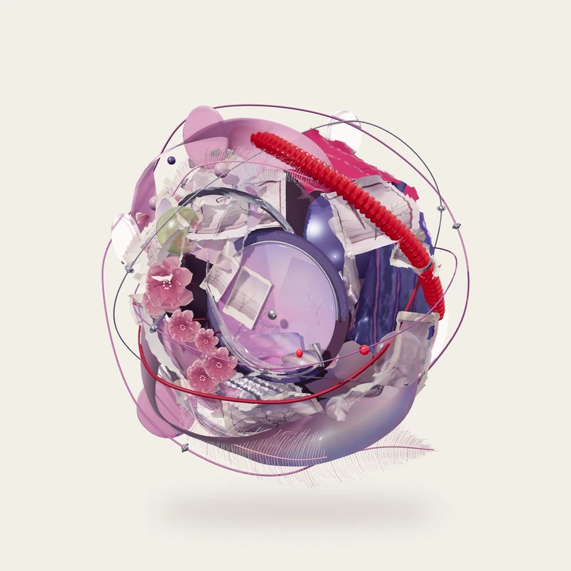
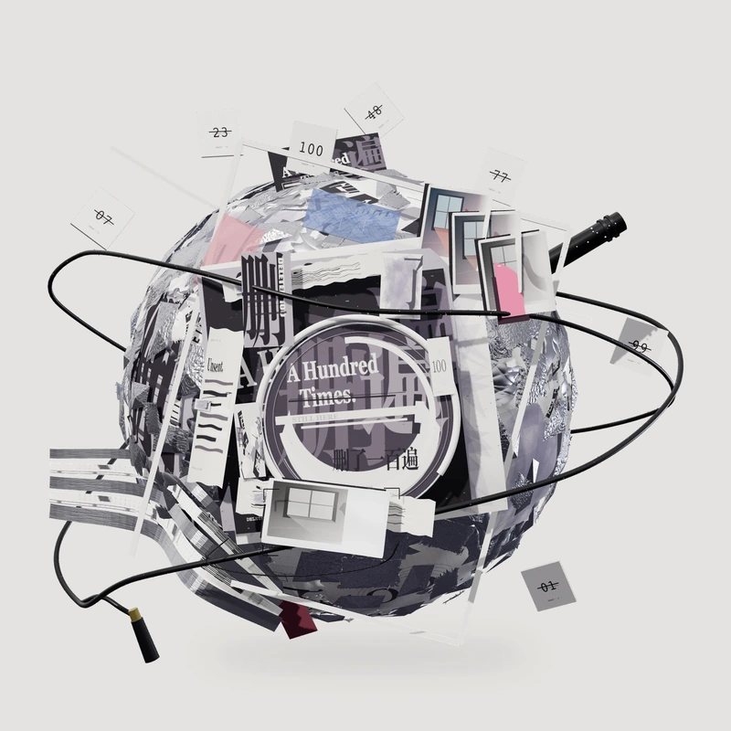
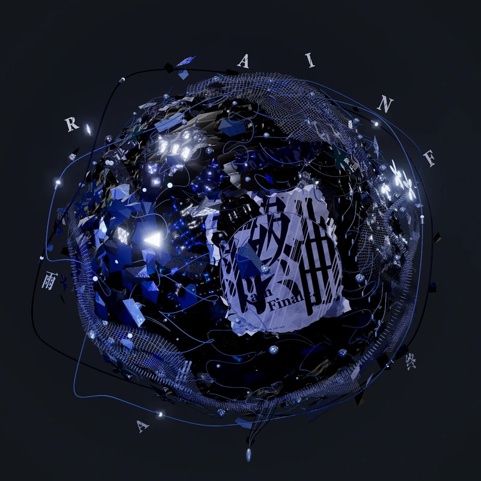

MY LITTLE ORBIT / SELECTED WORLDS
把喜欢的世界，
收藏成星球。
从一段记忆，走到一场雨。
四件独立的立体作品，
可以转一转，也可以停下来细看。
SELECTED WORLDS / 星球作品04 WORLDS · ONGOING COLLECTION

01PEARL / TIME折叠的时间
昨天，今天YESTERDAY,
TODAY
昨天被折起，今天从缝隙透进来。覆印、薄膜、花与一条红管，把两段时间留在同一颗星球里。

02SILVER / TYPE反复留下的痕迹
删了一百遍DELETED
A HUNDRED TIMES
删掉的字，折成另一种形状。银箔留住折痕，黑色轨道绕过那些反复留下的声音。
 03PAPER / GARDEN
03PAPER / GARDEN纸墨间的八处风景
思念若是一首诗IF LONGING
WERE A POEM
把未说完的话，安放在一方山水里。纸鹤引路，八处风景，等你走过去读一页。

04BLUE / NOCTURNE雨停之前的光
雨终曲RAIN
FINALE
最后一滴雨，还没有落地。黑银折皱、电蓝碎光与轻薄网纱，将一场雨留在结束的前一秒。
FOUR WORLDS / ONE COLLECTION
材料有自己的记忆。
每颗星球，也有。
玻璃保存反射，银箔留下折痕，纸墨收起一方山水，夜雨留住最后一点蓝光。你可以转动每颗星球，点击近景看材料的纹理；也可以进入纸墨园林，随纸鹤赴八处风景。「切换星球」和页尾的相邻作品，将四段旅程接在一起。